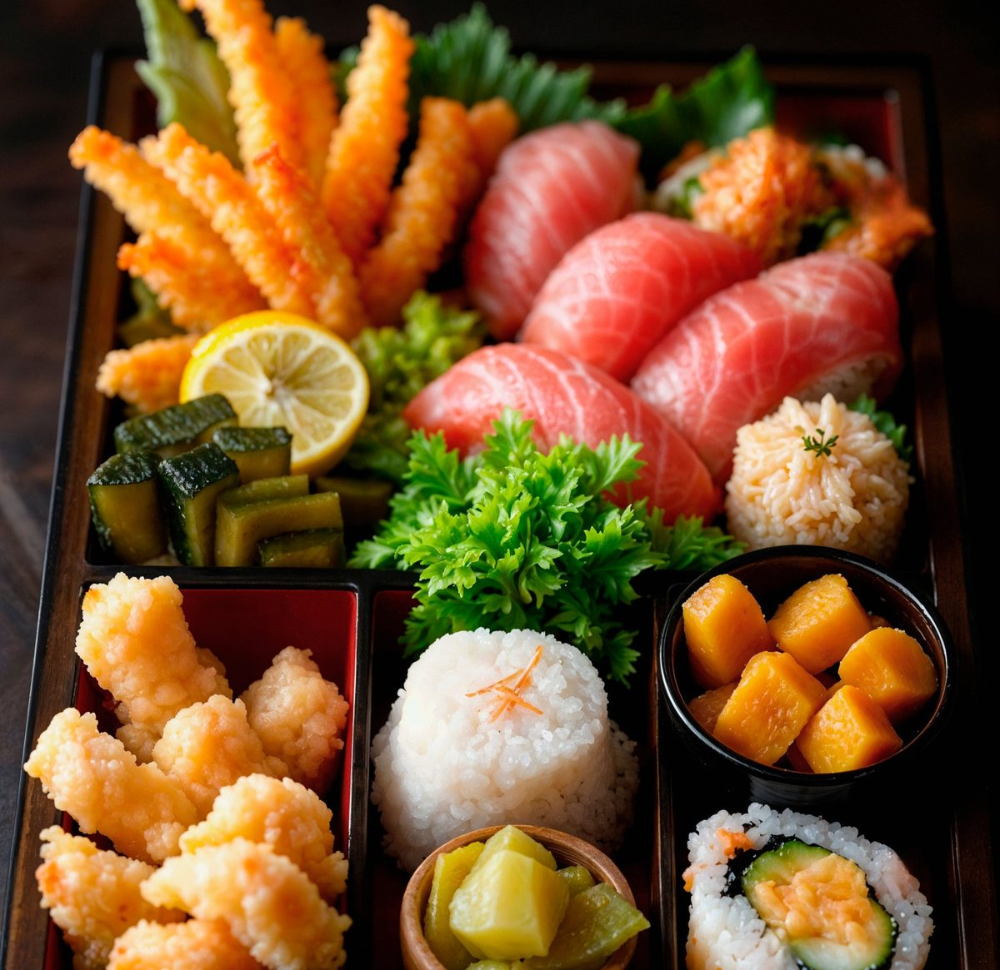
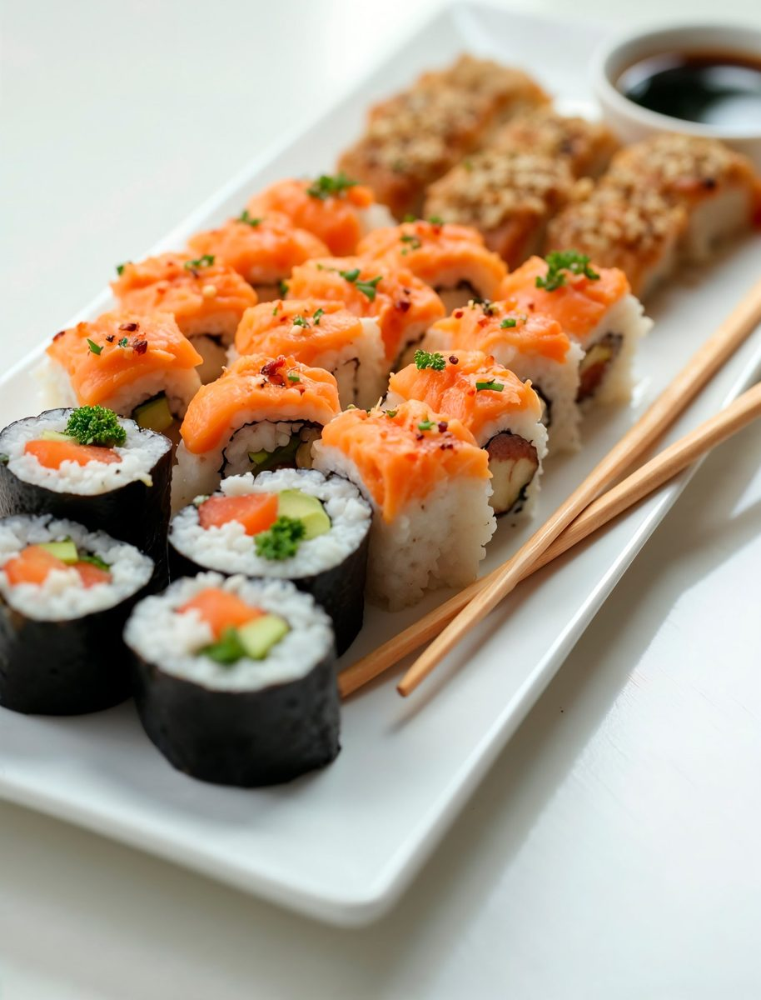
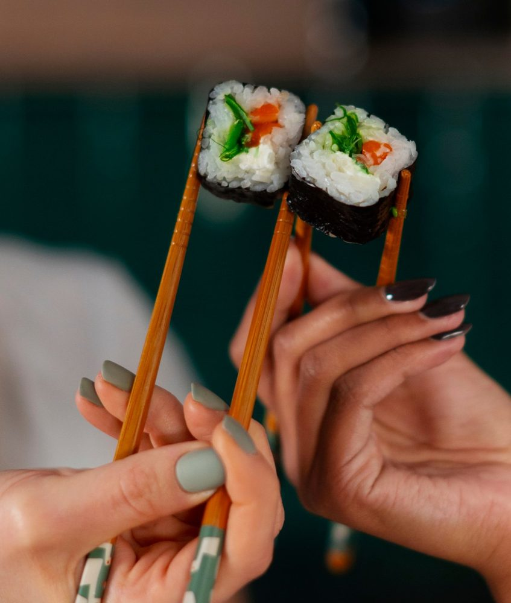

Rápido como um raio, feito com calma.
Do balcão de sushi à chapa quente, em um salão feito para conversas longas.

*Valores ilustrativos.


A melhor mesa é aquela em que ninguém olha o relógio.
Mesas amplas, sofás confortáveis e um balcão de onde dá para ver cada peça sendo montada. Aos domingos a casa enche de famílias, então vale reservar.
Reservar mesaSeu sushi favorito sem sair de casa. Embalagem que mantém cada peça no lugar e entrega rápida na região.
No dia do seu aniversário, a sobremesa é por conta da casa.
Mesas a partir de 12 pessoas têm reserva garantida e um rodízio cortesia.
Drinks em dobro de terça a quinta, das 18h às 20h.
*Benefícios ilustrativos.
Rua Exemplo, 000
São Paulo — SP
WhatsApp (11) 0000-0000
Aceitamos os principais vales-refeição.